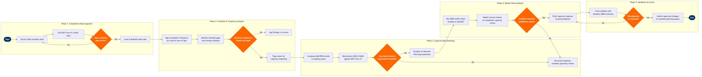

| Step | L4 Step Name | KPI / Target | Pain Point / Risk | Gate |
|---|---|---|---|---|
| 1.1 | Extract competitor schedule data from OAG feed | Data currency: schedule feed ≤7 days old; coverage ≥95% of target markets | OAG schedule data lags actual GDS availability by 24–72 hrs; codeshare operating vs marketing carrier misclassification inflates competitor frequency counts | |
| 1.2 | Ingest DOT Form 41 traffic and capacity statistics | Ingestion completeness ≥99% of published BTS records; pipeline SLA <4 hrs post-BTS release | T-100 data is released with a 60-day lag; ultra-LCC capacity additions are visible in OAG weeks before T-100 confirms actual operation | |
| 1.3 | Pull GDS booking and availability data for share estimation | Market coverage: GDS data represents ≥70% of bookable seats on target routes | NDC channel bookings bypass GDS; LCC direct-channel share is structurally underrepresented, causing systematic underestimation of competitor capture rate | |
| 1.4 | Validate data completeness and trigger re-pull if gaps detected | Data quality gate pass rate ≥98% before advancing to analysis phase | Partial OAG refreshes due to airline filing delays leave gaps for low-frequency international routes; manual gap-filling introduces analyst subjectivity | ⚠ |
| 2.1 | Map competitor frequency and timing by route | Frequency gap identified on ≥80% of monitored routes within 5 business days of OAG refresh | Ultra-LCC seasonal schedule volatility (Spirit, Frontier) makes frequency comparisons unstable; weekly snapshots miss intra-week capacity dumping tactics | |
| 2.2 | Assess competitor fleet gauge and seat capacity per route | Seat capacity variance vs prior period flagged within ±5% accuracy against T-100 actuals | SSIM equipment codes are often filed as generic family codes (e.g. 32A for any A320-family) making true gauge differentiation between A319/A320/A321neo unreliable | |
| 2.3 | Identify competitive schedule gaps and overlap windows | ≥5 whitespace route opportunities or ≥3 overlap-reduction candidates identified per quarterly cycle | SkySYM scenario modelling requires manual O&D demand curves as input; stale demand assumptions from pre-COVID traffic models skew gap analysis in recovering thin markets | |
| 2.4 | Determine whether material competitive threat warrants escalation | Escalation decision issued within 5 business days of schedule gap analysis completion | Threshold for 'material threat' is qualitatively defined; no standardised scoring rubric causes inconsistent escalation patterns across different analyst teams | ⚠ |
| 3.1 | Compute ASM and RPM trends versus industry peers | ASM CAGR benchmarked against top-5 network carriers; report produced within 3 days of T-100 release | Peer group selection is subjective; including ULCCs in the peer set distorts unit cost benchmarks given fundamentally different cost structures and ancillary revenue models | |
| 3.2 | Benchmark CASK and RASK against published Form 41 data | RASK within ±3% of peer median; CASK gap-to-best flagged if >10% adverse variance | SAP FI/CO cost data uses internal cost centre allocations that differ from DOT Form 41 reporting categories; reconciliation requires manual mapping table maintenance | |
| 3.3 | Evaluate whether own metrics fall below benchmark thresholds | Benchmark review cycle completed quarterly; critical gaps escalated to VP Network within 48 hrs | Power BI dashboards pull from Redshift snapshots with a 24-hr lag; real-time competitive capacity changes triggered by fare sales are invisible until next refresh cycle | ⚠ |
| 4.1 | Run O&D traffic share analysis by market | Market share tracking coverage ≥90% of top-50 O&D markets by revenue; report cycle ≤10 business days | SkyCAST O&D demand models are calibrated on historical traffic; post-pandemic leisure demand shift to off-peak O&D pairs is not yet fully reflected in SkyCAST baseline assumptions | |
| 4.2 | Model revenue impact of competitor capacity changes | Revenue impact model completed within 5 business days; scenario accuracy validated against last 4 actuals within ±8% | SkySYM demand elasticity parameters require periodic recalibration; outdated elasticities overestimate diversion from legacy network carriers and underestimate LCC price sensitivity | |
| 4.3 | Assess whether schedule response is justified by revenue model | Decision issued within 3 business days of revenue model delivery; routes with projected NPV >$500K fast-tracked to schedule change workflow | Fleet headroom data from the crew system and SkyMAX fleet assignment may reflect tentative aircraft swaps not yet confirmed; committing capacity response against uncommitted fleet creates downstream conflict | ⚠ |
| 5.1 | Draft capacity response and schedule recommendations | Draft recommendations delivered within 5 business days of go-decision; SSIM-formatted change files ready for slot filing | SkyWORKS schedule change workflow requires SSIM files to comply with IATA Season A/B slot deadlines; competitive response decisions made mid-season often miss the coordinated season window | |
| 5.2 | Cross-validate recommendations with Amadeus NRM inventory | NRM review completed within 3 business days; <10% of recommendations require material revision due to inventory conflict | NRM inventory controls are set per flight departure; schedule changes that shift flights to new time slots reset booking pace baselines and require NRM recalibration, creating a 2–3 week blind spot in yield management | ⚠ |
| 5.3 | Submit approved schedule changes to planning queue | 100% of approved changes submitted within IATA CRS filing window; zero capacity responses missed due to deadline breach | IATA CRS coordinated slot filings at Level 3 airports (e.g. LHR, JFK) require bilateral coordination that can delay competitive response by 3–6 months; uncoordinated airports still subject to airlines' own scheduling freeze windows |